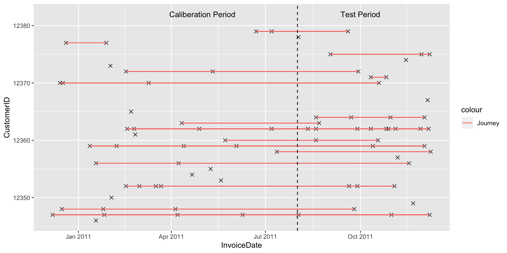
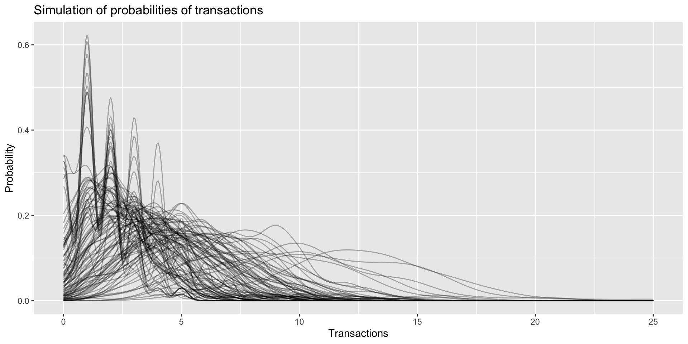
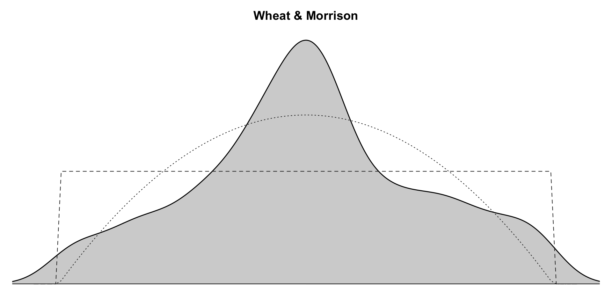
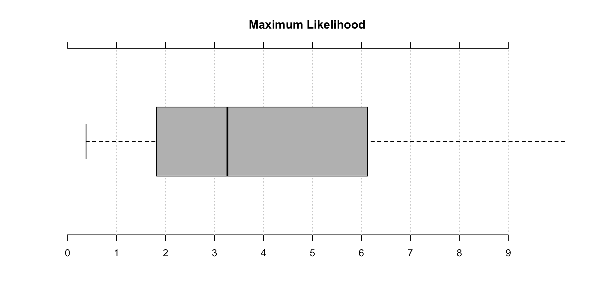
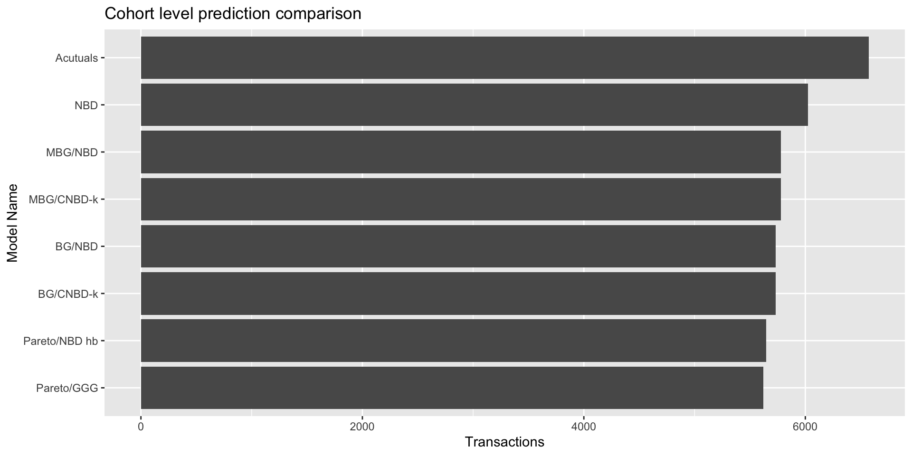

This project is aimed at comaparing various CLTV models and their prediction accuracy. Most of the models around CLTV are based on Pareto/NBD model which was proposed by Schmittlein. In 2003 Peter S Fader expanded upon this model and introduced BG/NBD model as an alternative to Pareto/NBD. The new model is computationally light and has similar accuracy as the base model. The paper can be found here
Michael Platzer in 2014 released R package called BTYDPlus which included few more models for CLTV calculations.
Following models are discussed-
MLE based models- These are the models in which parameter estimation happens based on maximum likelihood
Markov-Chain-Monte-Carlo based models- These models use MCMC simulation for parameter estimation
Almost all CLTV models are based on following major assumptions-
For this, we are using good old online retail data from UCI machine learning repository.
This project is focused on understanding CLTV modeling, so I am skipping over data cleaning and other EDA steps (not challenging your intellect here!)
I cleaned the data and aggregated transactions at order day level. Now we need to see how the transactions are spread over the period so that we can decide calibration and test period. We are going to caliberate on data before Aug-11 and use rest of the data for testing.
## Now data looks okay.. We need to caste datetime to date for building BYTD model
retail$InvoiceDate<-as.Date(retail$InvoiceDate)
#summary(retail$InvoiceDate)
## cutoff for calibration and testing
cutoffDate<-as.Date("2011-08-01")
##caliberatonPeriod Aprox 19 weeks
#(max(retail$InvoiceDate)-cutoffDate)## Summarising the entire data
orderDaySummary<-retail%>%
group_by(CustomerID,InvoiceDate)%>%
summarise(demand=sum(Quantity*UnitPrice))%>%
arrange(CustomerID,InvoiceDate)%>%
data.frame()
customerSummary<-orderDaySummary%>%
group_by(CustomerID)%>%
summarise(demand=sum(demand),transactions=n(), birth=min(InvoiceDate),death=max(InvoiceDate),
period=max(InvoiceDate)-min(InvoiceDate))%>%
arrange(CustomerID)%>%
data.frame()
orderDaySummary<-merge(orderDaySummary,customerSummary,by = 'CustomerID')To help users how customer behaviour looks over the timeline, we will try to visualize customers’ buying frequency. I randomly select some customers and plot their transactions w.r.t. caliberation cutoff.
### Visualization of sample customers and their journey
set.seed(222)
viZdata<-filter(orderDaySummary,CustomerID<12380)%>%
data.frame()
#str(viZdata)
ggplot(data = viZdata,aes(x =InvoiceDate,y = CustomerID))+
geom_point(shape=4,size=2)+geom_segment(aes(x = birth, y = CustomerID, xend = death, yend = CustomerID,col='Journey'))+
geom_vline(xintercept = cutoffDate,linetype='dashed')+annotate("text",x = as.Date("2011-10-01"),y = 12382, label="Test Period")+
annotate("text",x = as.Date("2011-05-01"),y = 12382, label="Caliberation Period")
Now the firt two assumptions of CLTV modeling state that transaction rate of each customer follows Poisson Distribution and the values of transaction rate λ among the cohort follow Gamma distribution. Lets try to simulate this for our data. FOr this, we will first generate list of transaction rates λ using gamma distribution and then gererate transactions using those λ’s. In our data, average transaction rate for the time period is 3.8. Every line in the graph below is one simulated customer and the line is PDF of the customers transactions in given time. As we can see transaction behavior is very different among different customers.
#summary(customerSummary$transactions)
# average transactions of each customer over the period is 3.8
set.seed(22)
y<-rgamma(n = 100,shape = 3.8,scale = 1)
simData<-data.frame(customers=numeric()
,transactions=numeric())
for(i in 1:length(y))
{
temp<-rpois(n = 100,lambda = y[i])
tempDf<-data.frame(cbind(customers=i,transactions=temp))
simData<-rbind(simData,tempDf)
}
simData$customers<-as.factor(simData$customers)
ggplot(data = simData,aes(x = transactions,fill=customers))+geom_line(stat = 'density',alpha=0.3)+
ggtitle('Simulation of probabilities of transactions')+xlab("Transactions")+ylab("Probability")
Now we need to convert the data into CBS format-Customer-by-sufficient-statistic dataframe. This data frame has following columns-
## Default weeks, includes only those who have made atleast one repeat purchase?
interimData<-orderDaySummary[,c(1,2,3)]
names(interimData)<-c('cust','date','sales')
custCbs<-elog2cbs(interimData,T.cal = cutoffDate)
#head(custCbs)Now we test regularity of transaction times. A return value of close to 1 supports the assumption of exponentially distributed inter transaction times, whereas values significantly larger than 1 reveal the presence of regularity. Since both values are above 1, it represents regularity in transactions
mfrow = c(1, 2)
a<-estimateRegularity(groceryElog, method = "wheat",
plot = TRUE, title = "Wheat & Morrison")
b<-estimateRegularity(groceryElog, method = "mle",
plot = TRUE, title = "Maximum Likelihood")
c(a,b)## [1] 1.826974 3.262912#estimate parameters for various models
set.seed(1234)
params.nbd <- nbd.EstimateParameters(custCbs) # NBD
params.bgnbd <- BTYD::bgnbd.EstimateParameters(custCbs) # BG/NBD
params.bgcnbd <- bgcnbd.EstimateParameters(custCbs) # BG/CNBD-k
params.mbgnbd <- mbgnbd.EstimateParameters(custCbs) # MBG/NBD
params.mbgcnbd <- mbgcnbd.EstimateParameters(custCbs) # MBG/CNBD-k
## log likelihood of all models
rbind(c("NBD", nbd.cbs.LL(params.nbd, custCbs)),
c("BG/NBD", BTYD::bgnbd.cbs.LL(params.bgnbd, custCbs)),
c("BG/CNBD-k", bgcnbd.cbs.LL(params.bgcnbd, custCbs)),
c("MBG/NBD", mbgcnbd.cbs.LL(params.mbgnbd, custCbs)),
c("MBG/CNBD-k", mbgcnbd.cbs.LL(params.mbgcnbd, custCbs)))%>%
data.frame()## X1 X2
## 1 NBD -21704.5285173858
## 2 BG/NBD -21678.5834988302
## 3 BG/CNBD-k -21678.5834988302
## 4 MBG/NBD -21690.0786754486
## 5 MBG/CNBD-k -21690.0786754486Log Likelihoodh helps us identify model that performs the best. We will test for other models too.
##### Pareto/NBD hb
pnbd.draws <- pnbd.mcmc.DrawParameters(custCbs)## set param_init: 0.8116, 7.5903, 0.0238, 1.2482
## running in parallel on 2 corespnbd.xstar.draws <- mcmc.DrawFutureTransactions(custCbs, pnbd.draws)
### Pareto/GGG
pggg.draws <- pggg.mcmc.DrawParameters(custCbs) ## set param_init: 1, 1, 0.8783, 7.7295, 0.0178, 0.4024
## running in parallel on 2 corespggg.xstar.draws <- mcmc.DrawFutureTransactions(custCbs, pggg.draws)These models are usually not good for customer lever predictions.
# NBD
custCbs$xstar.nbd <- nbd.ConditionalExpectedTransactions(
params = params.nbd, T.star = 19,
x = custCbs$x,
T.cal = custCbs$T.cal)
#BG/NBD
custCbs$xstar.bgnbd<- BTYD::bgnbd.ConditionalExpectedTransactions(
params = params.bgnbd , T.star = 19,
x = custCbs$x, t.x = custCbs$t.x,
T.cal = custCbs$T.cal)
#BG/CNBD-k
custCbs$xstar.bgcnbd<- bgcnbd.ConditionalExpectedTransactions(
params = params.bgcnbd , T.star = 19,
x = custCbs$x, t.x = custCbs$t.x,
T.cal = custCbs$T.cal)
#MBG/NBD
custCbs$xstar.mbgnbd<- bgcnbd.ConditionalExpectedTransactions(
params = params.mbgnbd , T.star = 19,
x = custCbs$x, t.x = custCbs$t.x,
T.cal = custCbs$T.cal)
# MBG/CNBD-k
custCbs$xstar.mbgcnbd<- mbgcnbd.ConditionalExpectedTransactions(
params = params.mbgcnbd , T.star = 19,
x = custCbs$x, t.x = custCbs$t.x,
T.cal = custCbs$T.cal)
##### Pareto/NBD hb
custCbs$xstar.pnbd.hb <- apply(pnbd.xstar.draws, 2, mean)
### Pareto/GGG
custCbs$xstar.pggg <- apply(pggg.xstar.draws, 2, mean)
# compare predictions with actuals at aggregated level
comps<-rbind(`Acutuals` = c(`Acutal` = sum(custCbs$x.star)),
`NBD` = round(sum(custCbs$xstar.nbd)),
`BG/NBD` = round(sum(custCbs$xstar.bgnbd)),
`BG/CNBD-k` = round(sum(custCbs$xstar.bgcnbd)),
`MBG/NBD`= round(sum(custCbs$xstar.mbgnbd)),
`MBG/CNBD-k` = round(sum(custCbs$xstar.mbgcnbd)),
`Pareto/NBD hb` = round(sum(custCbs$xstar.pnbd.hb)),
`Pareto/GGG` = round(sum(custCbs$xstar.pggg)))%>%
data.frame()
ggplot(data =comps ,aes(y = Acutal,x = reorder(rownames(comps),Acutal)))+geom_col()+ggtitle('Cohort level prediction comparison')+
ylab('Transactions')+xlab('Model Name')+coord_flip()
absoluteError<-function(actual,predicted)
{
return(sum(abs(actual-predicted))/sum(actual))
}
comps<-rbind(`NBD` = absoluteError(custCbs$x.star,custCbs$xstar.nbd),
`BG/NBD` = absoluteError(custCbs$x.star,custCbs$xstar.bgnbd),
`BG/CNBD-k` = absoluteError(custCbs$x.star,custCbs$xstar.bgcnbd),
`MBG/NBD`= absoluteError(custCbs$x.star,custCbs$xstar.mbgnbd),
`MBG/CNBD-k` = absoluteError(custCbs$x.star,custCbs$xstar.mbgcnbd),
`Pareto/NBD hb` = absoluteError(custCbs$x.star,custCbs$xstar.pnbd.hb),
`Pareto/GGG` = absoluteError(custCbs$x.star,custCbs$xstar.pggg))%>%
data.frame()
colnames(comps)<-"AbsoluteError"
comps## AbsoluteError
## NBD 0.6578187
## BG/NBD 0.6482107
## BG/CNBD-k 0.6482107
## MBG/NBD 0.6523493
## MBG/CNBD-k 0.6519190
## Pareto/NBD hb 0.6553530
## Pareto/GGG 0.6510682This is not the best cohort level prediction but we can plat around with different caliberation/test period windows and increasing customer count.